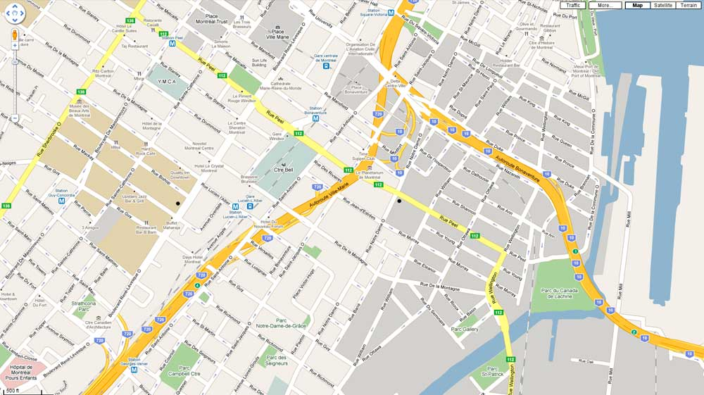

elementary OS
El sustituto de windows y macOS hecho a conciencia, potente y ético


Pague lo que pueda:
$ 10 $ 20 $ 30 $ Personalizado elementary OS 8.0.2 Circe (3.3 GB) Requisitos recomendados del sistema | Preguntas frecuentesQué hay de nuevo en elementary OS 8
¡Sin preocupaciones, nosotros nos preocupamos por ti! elementary OS 8 trae la Sesión segura, que verifica que las aplicaciones respeten tu privacidad y pidan siempre tu consentimiento, un nuevo Dock con características productivas de multitarea y manejo de ventanas, y empodera nuestra comunidad a través del Diseño Inclusivo.
Lea el anuncio ➝


More Apps, More Features, More Cowbell!
Updates for OS 8 and Early Acces
Danielle Foré
Sun, Oct 5, 2025 . 8 min read
Elementary OS 8.0.2 Available Now
More reliable and accesible than ever
Danielle Foré
Sun, Sep 21, 2025 . 4 min read

Developer Tools, Hardware Enablement, and Multitasking Futures
Updates for OS 8 and Early Acces
Danielle Foré
Sun, Aug 10, 2025 . 7 min read